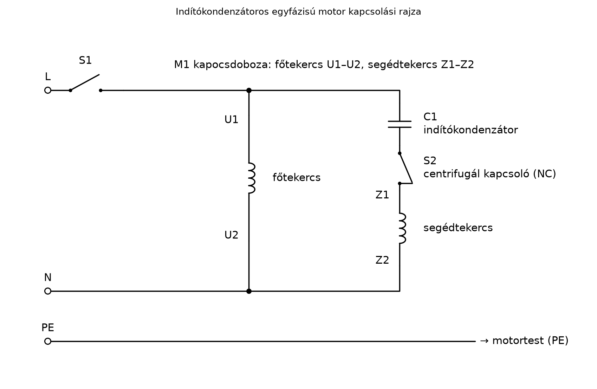
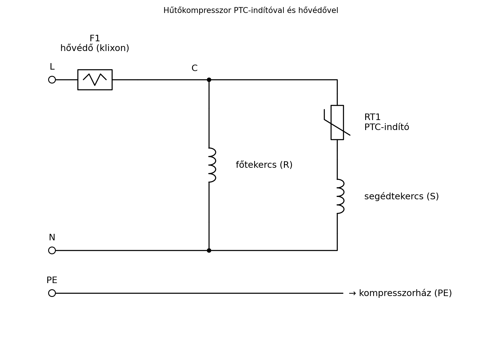
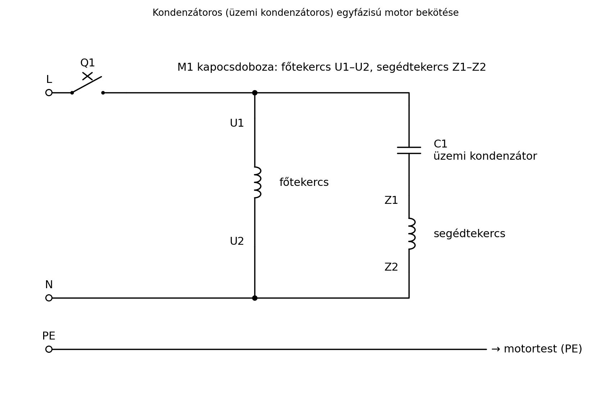
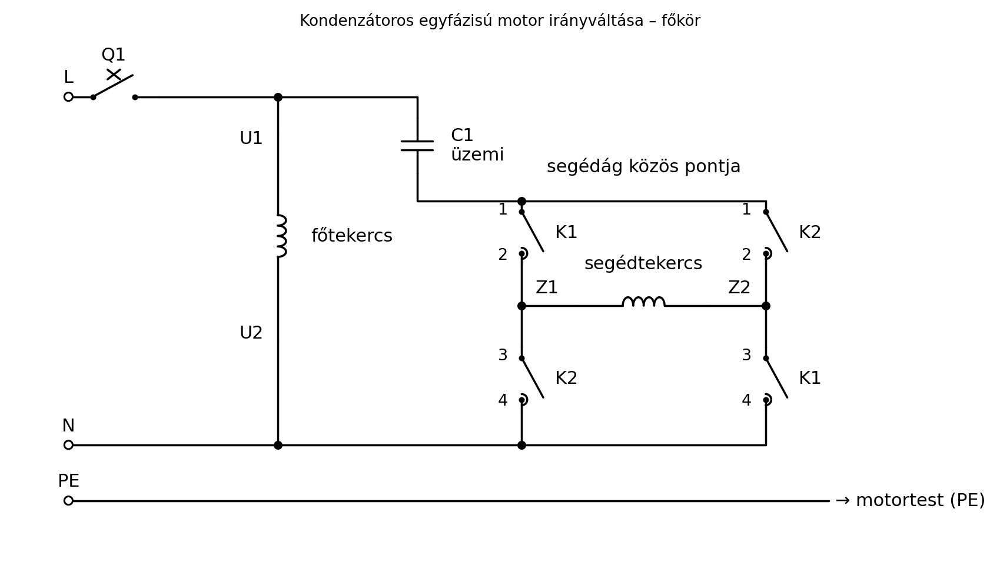
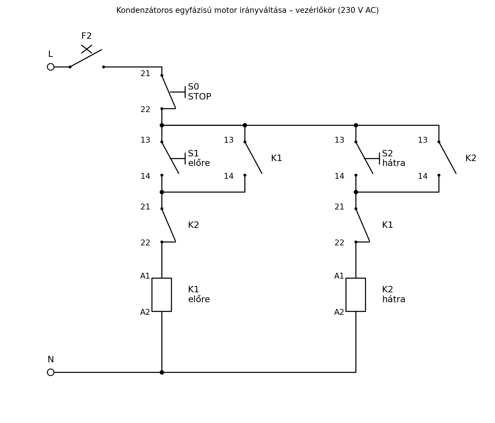
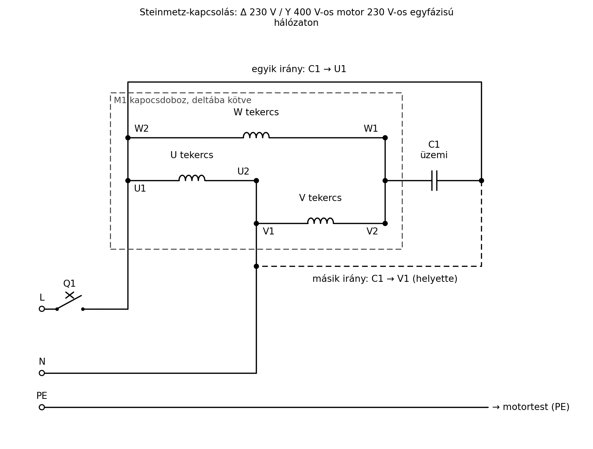

Statikus változat (mint a PDF-ben)
A háztartási és kisipari fogyasztók zöme – hűtő, mosógép, szellőzőventilátor, kompresszor, kézi szerszám, kerti vízpumpa – egyfázisú hálózatról üzemel. Ha ilyen motort kell bekötnöd, javítanod vagy kicserélned, nem elég tudnod, hogy „van benne kondenzátor”: értened kell, hogyan jön létre a forgó mágneses mező, miért van két tekercscsatlakozás, hogyan változtatható a forgásirány, és mi történik, ha a kondenzátor vagy a centrifugál kapcsoló meghibásodik. Ez az alfejezet a gyakorlatban leggyakoribb egyfázisú aszinkron motorokkal foglalkozik: a kondenzátoros és az árnyékolt pólusú motorral.
Mire jó ez a munkahelyen? Egy kondenzátoros motor bekötésénél a legkisebb tévedés is azt eredményezheti, hogy a motor nem indul, túlmelegszik, vagy rossz irányba forog. A hibakeresésnél pedig gyakran nem a motor, hanem a kondenzátor vagy a kapcsoló a ludas – ezt méréssel kell elkülöníteni.
Képzelj el egy régi, de szép asztali ventilátort. Bekapcsolás után zúg, a tengelye rezeg, de nem forog. Ha kézzel meglökjük, néha elindul, máskor nem. Ez a tipikus kondenzátorhiba képe. A motor nem tud önállóan elindulni, mert hiányzik a segédfázis árama, amely a forgó mezőt elindítaná. Ilyen esetben a szerelő nem azonnal a motort bontja, hanem előbb a kondenzátort méri.
A háromfázisú aszinkron motornál a három, térben 120°-kal eltolt tekercsben folyó, időben is 120°-kal eltolt áramok eleve forgó mágneses mezőt hoznak létre. Az egyfázisú motornál viszont csak egy váltakozó áramú tekercs van – vagy annak különböző részei –, így a gerjesztés csak lüktető, nem forgó mezőt kelt. Egy lüktető mező két, ellentétes irányban forgó, azonos nagyságú mező összegére bontható. Álló forgórésznél a két forgó mező nyomatéka éppen kiejti egymást, ezért a motor nem indul el.
Ahhoz, hogy a motor elinduljon, legalább két, térben eltolt tekercsen időben eltolt (fázisban eltolt) áramot kell átvezetnünk. Ezt szolgálja a segédfázis vagy indítótekercs. A két tekercs árama közötti fáziseltolást leggyakrabban kondenzátor hozza létre. A motor elindulása után a segédfázist sok esetben kiiktatják, de vannak üzemi kondenzátoros motorok is, ahol a segédfázis állandóan be van kapcsolva.
Megjegyzés. A kondenzátor fázistoló szerepe közvetlenül a Kondenzátorok kapcsolása és az RC-tag alfejezetben tanult váltakozó áramú kondenzátor-viselkedésre épül. A kondenzátor árama -kal siet a feszültségéhez képest, így a segédtekercsben folyó áram időben eltolódik a főtekercs áramához képest.
Hogy mekkora ez az eltolódás, és mit jelent a rossz kondenzátor, azt a következő fázorábra mutatja egy szemléltető helyettesítő modellen (főtekercs , segédág sorban a kondenzátorral, 230 V, 50 Hz – képletből számolt, nem mért adat). A hálózati feszültség a vízszintes referencia; a főtekercs árama az induktív tekercs miatt kb. 53°-kal késik, a segédág árama a kondenzátor miatt siet, az eredő hálózati áram .
Megfelelő kapacitásnál (itt 37 µF) a két áram kb. 90°-ra kerül egymástól, így a két tekercs a legjobb forgómezőt adja. Túl kicsi kondenzátornál a segédág árama lecsökken (a szög itt 90° fölé nő), a forgómező gyenge, a motor nehezen indul; túl nagy kondenzátornál a segédág árama megnő és a szög 90° alá csökken – a nyomaték nem javul, a segédtekercs viszont túlterhelődik és melegszik. A HTML-kiadásban a kapacitást csúszkával változtathatod; figyeld meg, melyik értéknél lesz a legnagyobb a nyomatékmutató ().
A motor állórészében két tekercs van:
A forgórész kalickás (rövidre zárt) forgórész, mint a háromfázisú aszinkron motornál. A segédtekercs és a főtekercs együtt olyan, mint egy aszimmetrikus kétfázisú motor, amely elegendő indítónyomatékot ad.
A kondenzátor kapcsolása szerint két alaptípust különböztetünk meg:
Létezik indító- és üzemi kondenzátoros motor is (két kondenzátorral), ahol a nagyobb kapacitású indítókondenzátort a centrifugál kapcsoló lekapcsolja, az üzemi kondenzátor viszont folyamatosan ellátja a segédtekercset.
Az indítókondenzátor nagy kapacitású, rövid üzemidejű elektrolitikus vagy fóliás AC-kondenzátor. Az üzemi kondenzátor kisebb kapacitású, folyamatos üzemű fóliakondenzátor. A rossz kondenzátor a leggyakoribb egyfázisú motorhiba.
Figyelem. A motor kondenzátorát mindig a motorgyártó által megadott típusra és feszültségre cseréld. A kapacitás eltérése megváltoztatja a segédfázis áramát: túl nagy kapacitás túlmelegíti, túl kicsi csökkenti az indítónyomatékot.
A két kondenzátortípust és a kondenzátor biztonságos kisütését a következő ábra mutatja. Az üzemi kondenzátor (a) burkolatán olvasható a kapacitás tűréssel, a névleges váltakozó feszültség és a frekvencia; alján rögzítőcsap van. Az indítókondenzátor (b) nagyobb kapacitású, de csak rövid idejű üzemre készül. A (c) rész a helyes eljárást mutatja: a feszültségmentesített motor kondenzátorát szigetelt kisütő ellenállással sütjük ki, majd multiméterrel ellenőrizzük, hogy a kapcsain 0 V van; a (d) rész a tilos megoldást, a csavarhúzós rövidre zárást.
Csere előtt a régi kondenzátor feliratáról jegyezd fel a kapacitást és a névleges feszültséget; az új legalább ugyanakkora feszültségre készüljön, kapacitása pedig egyezzen. A feliratok az ábrán csak példák. A HTML-kiadásban a négy panel külön nagyítható. A névleges feszültség választásának számpéldája: Villamos tér és kondenzátor; a motorkondenzátor feliratának bontása: Passzív alkatrészek: ellenállás, kondenzátor, tekercs.
Az alábbi kapcsolási rajz egy indítókondenzátoros, centrifugál kapcsolóval ellátott motort mutat.

Az ábrán a motor két tekercse külön látszik: a főtekercs (U1–U2) közvetlenül L és N között, a segédtekercs (Z1–Z2) a kondenzátorral és a centrifugál kapcsolóval sorban, a főtekerccsel párhuzamosan; a motortest a PE-re csatlakozik. A gyakorlati rajzokon gyakran egyetlen motorjelképpel és a kondenzátorral egyszerűsítik ugyanezt.
A kompresszorokban és a nagyobb indítónyomatékú szivattyúkban használt indító- és üzemi kondenzátoros (két kondenzátoros) motornál a segédtekercs előtt két párhuzamos ág van. A következő rajz ezt mutatja; a motorvédő (F1) a közös fázisvezetőben, mindkét tekercság előtt van.
![Indító- és üzemi kondenzátoros (két kondenzátoros) egyfázisú motor - A főtekercs (U1–U2) a közös pont és N között. A segédtekercs (Z1–Z2) előtt két párhuzamos ág: C1 üzemi kondenzátor állandóan, C2 indítókondenzátor az S2 centrifugálkapcsolóval sorban (nyugalmi zárt érintkező, álló motornál zárva; kb. a szinkron fordulatszám 70–80 %-ánál bont, ellenőrizendő: gyártói adat). R1 kisütőellenállás a C2 kapcsain (a gyártók gyakran beépítik). Q1 kismegszakító, F1 motorvédő/hővédő a közös fázisvezetőben; a motortest a PE-re csatlakozik.](assets/ve098-diagram-2.png)
Indításkor mindkét ág vezet: a két kapacitás összeadódik, a segédtekercs árama nagy és jól siet, ezért nagy az indítónyomaték. Felfutás után az S2 bont, a C2 kiesik, és a motor a C1-gyel üzemi kondenzátoros motorként jár tovább. Az R1 a lekapcsolt C2-t néhány másodperc alatt kisüti, így a következő indításkor az S2 nem feltöltött kondenzátorra zár (érintkezőkímélés), és a szerelőt sem éri töltés. Kérdés a rajzhoz: melyik kondenzátoron folyik áram, amikor a motor már névleges fordulattal jár?
Elektronikus indítórelé. Újabb motorokban a centrifugálkapcsoló helyén elektronikus (áram- vagy feszültségérzékelő) indítórelé ül, ugyanott, sorban a C2-vel. Az áramérzékelő változat a főtekercs áramát figyeli: indításkor a nagy áram zárja az érintkezőt, felfutáskor a csökkenő áram bontja. A feszültségérzékelő változat a segédtekercsen indukálódó, a fordulattal növő feszültségre bont. A relé kapocsjelei gyártófüggők, ezért cserekor a gyártói bekötési rajz az irányadó (ellenőrizendő: a relé adatlapja). Felismerés: kis, motoron kívül vagy a kapocsdobozban ülő dobozka, három-négy kivezetéssel; a centrifugálkapcsolónak nincs külön doboza, az a motor belsejében, a tengelyen van.
PTC-indító (hűtőkompresszor). A háztartási hűtőkompresszorok segédtekercsével sorban egy PTC-termisztor ül. Hidegen kis ellenállású, ezért indításkor átengedi a segédtekercs áramát; az áram melegíti, ellenállása ugrásszerűen nő, és néhány tized másodperc alatt gyakorlatilag „kiveszi” a segédtekercset. A kompresszor csak akkor indítható újra, ha a PTC lehűlt – ezért kikapcsolás után percekig vár (a gyors visszakapcsolásra a hővédő old). A közös vezetékben a hővédő („klixon”) sorosan van.

Mérési tipp. Feszültségmentes, álló motornál a centrifugálkapcsoló zárt: az ohmmérő a C2 → S2 → Z1 úton folytonosságot mutat. Ha az S2 nyitva ragadt, a segédág indításkor nem kap áramot: a motor zúg, nem indul, de kézzel meglökve elindul (a meglökés iránya szerint). Ugyanezt a tünetet adja a kiszáradt indítókondenzátor is, ezért a kapacitást is mérd (előtte süsd ki).
A forgásirány meghatározásához a fő- és segédtekercs áramának fázissorrendjét kell megcserélni. A legegyszerűbb módja, ha a segédtekercs csatlakoztatását megfordítjuk. Ekkor a segédtekercs árama fázisban ellenkező irányú lesz a főtekercshez képest, és a motor ellenkező irányba indul. A főtekercs bekötését nem cseréljük.
Gyakorlatban ez azt jelenti, hogy a segédtekercs sorkapcsok jelölését (pl. Z1, Z2) felcseréljük. A főtekercs kapcsait U1-nel és U2-vel, a segédtekercs kapcsait Z1-gyel és Z2-vel jelölik. A motorvédőt (hővédelmet) a közös fázisvezetőbe, mindkét tekercság elé kapcsoljuk (L → motorvédő → U1 és a kondenzátoros ág közös pontja), hogy a segédág is védett legyen; a beépített tekercshővédő bekötését a gyártói rajz adja meg.
A pontos bekötést az alábbiak szerint ellenőrizd:

A gyakorlatban a motor adattáblája és a csatlakozódoboz felirata mindig elsődleges. Ha a felirat hiányzik, a tekercspárok ellenállásméréssel azonosíthatók: a főtekercs általában kisebb ellenállású, a segédtekercs nagyobb.
A következő ábra egy üzemi kondenzátoros motort mutat kívülről és a kapocsdoboz bekötését. Az (a) részen a kondenzátor (1) a kapocsdobozra (2) van szerelve, adatai az adattáblán (3) is szerepelnek. A (b) részen a hálózat L ere az U1, az N ere az U2 kapocsra kerül, a kondenzátor az U1 és a Z1 kapocs közé van kötve, a segédtekercs másik vége (Z2) híddal az U2-re; a PE a PE-csavarra. A (c) rész az ellenkező forgásirányt mutatja: a segédtekercs két vége helyet cserél – a kondenzátor most az U1 és a Z2 közé, a híd a Z1 és az U2 közé kerül –, a főtekercs és a betáplálás változatlan.
A kapocskiosztás gyártónként eltér, ezért mindig a dobozfedél belső rajza és a gyártói kapcsolási rajz az irányadó; az ábra a fenti két kapcsolási rajz egy lehetséges fizikai megvalósítása. A HTML-kiadásban a két bekötés között válthatsz.
Üzemszerű irányváltás. Redőny-, kapu-, csörlő- vagy keverőmotornál a forgásirányt nem átkötéssel, hanem kapcsolókészülékkel váltjuk: a főtekercs bekötése állandó, a segédág (C1 + Z1–Z2) két végét pedig a K1 („előre”) vagy a K2 („hátra”) mágneskapcsoló cseréli fel. A következő két rajz a fő- és a vezérlőkört mutatja.


Kövesd végig a rajzokon: az S1 megnyomására a K1 behúz, a 13–14 érintkezője önfenntart, a 21–22 bontója pedig megszakítja a K2 ágát – ilyenkor az S2 hatástalan. A főkörben a K1 a C1-et a Z1-re, a Z2-t az N-re köti; a K2 ugyanezt fordítva teszi, a főtekercs bekötése egyik irányban sem változik. Változatként egy háromállású irányváltó kapcsoló (előre–0–hátra) is felcserélheti a segédtekercs két végét; a középső „0” állás a kényszerű megállást biztosítja.
Figyelem. Üzemi kondenzátoros (PSC) motornál az irány álló vagy kis fordulatú motornál váltható. Centrifugálkapcsolós (CSIR) motor forgás közben nem fordítható meg: a kapcsoló ilyenkor nyitva van, a segédág nem kap áramot, és a motor az eredeti irányba forog tovább. Irányváltás csak megállás után lehet (időrelés várakozással vagy kezelési utasítással). Redőnymotoroknál a gyártó gyakran két fázisvezetékes (fel/le) bekötést és belső végálláskapcsolókat ad – a két irányt egyszerre feszültség alá helyezni tilos, ezért a redőnykapcsoló is reteszelt. A reteszelés és az önfenntartás részletes működését a Reverzáló kapcsolás és reteszelés alfejezet tárgyalja.
Az árnyékolt pólusú (spalt) motor a legegyszerűbb és legolcsóbb egyfázisú aszinkron motor. Nincs benne kondenzátor, nincs centrifugál kapcsoló, és a forgásiránya is csak a gyártásnál változtatható. Az állórész pólusain egy rövidre zárt rézgyűrűt (árnyékoló menetet) helyeznek el. Ez a gyűrű késlelteti a pólus árnyékolt részének mágneses fluxusát, így a pólus szélén fázisban eltolt fluxus jön létre. Ez a kis aszimmetria elegendő ahhoz, hogy a mező „végigsöpörjön” a póluson, és a kalickás forgórész elinduljon.
Az árnyékolt pólusú motor jellemzően kis teljesítményű (néhány watt – néhány 100 W), alacsony hatásfokú, de egyszerű és csendes. Tipikus alkalmazásai: kis ventilátorok, mikrohullámú sütő tányérforgatója, hűtőgép-ventilátorok, kis szivattyúk (pl. mosogatógép-ürítő).
Felépítését a következő ábra mutatja: a lemezelt vasmagot (1) egyetlen gerjesztőtekercs (2) gerjeszti, a két pólus a kalickás forgórész (4) két oldalán áll, és mindkét pólus egyik szélét egy rövidre zárt rézgyűrű (3) öleli körül. A forgórész mindig az árnyékolatlan pólusrész felől az árnyékolt felé forog (5).
Mivel a forgásirányt a gyűrűk helye szabja meg, bekötéssel nem lehet megfordítani. Ha egy ilyen motor zúg, de nem indul, gyakori ok a beszorult vagy kiszáradt csapágy, ritkábban a szakadt árnyékoló gyűrű. A HTML-kiadásban a részek rámutatásra kiemelődnek.
Megjegyzés. Az árnyékolt pólusú motornál a fáziseltolt fluxusnak ugyanaz a szerepe, mint a kondenzátoros motornál: indítónyomatékot hoz létre. A kalickás forgórész itt is ugyanúgy működik, mint a Szerkezet és működési elv, forgó mágneses mező alfejezetben tárgyalt motoroknál.
Az egyfázisú motorok indítása attól függ, hogy a motor milyen segédfázist használ.
Szabály. Az egyfázisú motor indítónyomatéka a segédtekercs térbeli és időbeli eltérésétől függ. Minél jobban megközelíti a 90°-os térbeli és időbeli eltérést, annál jobb a forgómező-képzés. A kondenzátor áramának fáziseltolása éppen ezt az időbeli eltérést hozza létre. A gyakorlatban a kondenzátor értékét a gyártó úgy méretezi, hogy a segédtekercs árama kb. 90°-kal siessen a főtekercs áramához viszonyítva.
Figyelem. A kondenzátor értékét ne változtasd meg önkényesen. Ha nagyobb kapacitást teszel, a segédtekercs árama nő, a motor túlmelegszik. Ha kisebbet, az indítónyomaték csökken, és a motor nehezen indul.
Kis háromfázisú motort (szivattyú, daráló, kisgép) üzemi kondenzátorral 230 V-os egyfázisú hálózatról is járathatunk. Ez a Steinmetz-kapcsolás: a deltába kötött motor két kapcsa a hálózatra, a harmadik kapocs egy kondenzátoron át az egyik hálózati kapocsra kerül, így a harmadik tekercs fáziseltolt áramot kap – ugyanaz az elv, mint a kondenzátoros egyfázisú motor segédfázisa.
Feltétel. Csak Δ 230 V / Y 400 V adattáblájú motor alkalmas, deltába kötve: így a tekercsre a névleges 230 V jut. A Δ 400 V / Y 690 V-os motor nem alkalmas: deltában tekercsenként csak 230 V-ot kapna a névleges 400 V helyett, a nyomatéka a feszültség négyzetével, nagyjából harmadára esne.
A kapcsolást a következő rajz mutatja. A kapocsdobozban a három deltahíd (U1–W2, V1–U2, W1–V2) a rajzon a három függőleges csomópontvonal; az L a Q1-en át az U1-re, az N a V1-re kerül, a C1 üzemi kondenzátor a W1 és az U1 között van.

Kövesd a rajzot: az U1–U2 tekercs közvetlenül L–N közé kerül, a V1–V2 és a W1–W2 tekercs sorban, illetve a kondenzátoron át kap feszültséget, ezért a három tekercs árama egymáshoz képest eltolódik, és (nem tökéletesen szimmetrikus) forgó mező jön létre. A forgásirányt a kondenzátor szabad végének áthelyezése (U1 ↔︎ V1) fordítja meg. Nehéz indításhoz a C1-gyel párhuzamosan egy C2 indítókondenzátor is beköthető, sorban egy indítórelével vagy indítónyomógombbal és a C2 kapcsain egy R2 kisütőellenállással – ahogy a két kondenzátoros egyfázisú motornál láttad.
Méretezési ökölszabály (ellenőrizendő: motorgyártói ajánlás):
Korlátok és tipikus hibák. Csak kis motorokhoz való (néhány kW alatt; ellenőrizendő). A motor melegebb, mint háromfázisú üzemben, és a terhelés változásával a tekercsáramok aszimmetrikusak lesznek – a kondenzátor csak egy munkapontra „hangolható”. Gyakori hiba a Δ 400 V-os motor bekötése (gyenge nyomaték, nem indul), a túl kicsi feszültségű kondenzátor, és a kisütés elmulasztása (lásd fent). A háromfázisú motorvédő egyfázisú üzemben a fázishiány-érzékelés miatt téves kioldást adhat, ezért a bekötését és a beállítását a gyártói útmutató szerint kell megválasztani (ellenőrizendő).
A 7. feladat ezt a méretezést gyakoroltatja.
Szabvány. Az egyfázisú aszinkron motorokra is a villamos forgógépek általános előírásai vonatkoznak. Az MSZ EN 60034 sorozat (a villamos forgógépek névleges adatai és teljesítménye) ad iránymutatást a kapocstábla adataihoz, a veszteségekhez és a hatásfok osztályokhoz. A motor védettségére az MSZ EN 60529 (IP-kód) vonatkozik. A motorvédő kapcsolókra, mágneskapcsolókra és hőkioldókra az MSZ EN 60947 sorozat vonatkozik. A gépek villamos berendezéseire – ha a motor egy gépi berendezés része – az MSZ EN 60204-1 érvényes. A pontos kapcsolási rajzot és a csatlakozódoboz feliratait mindig a motorgyártó dokumentációja adja meg. (ellenőrizendő: aktuális szabványkiadás)
Egy szerviztechnikus egy hűtőkamra szellőzőmotorját hozza be javításra. A motor zúg, erősen melegszik, és nem indul el. A szerelő megméri a kondenzátort, és az értéke a névleges 6 µF helyett 1,5 µF. A kondenzátor tehát „kiöregedett”. A csere után a motor elindul, de a szerelő észreveszi, hogy a forgásirány nem megfelelő. A motor a levegőt befelé fújja, nem kifelé. A megoldás: a segédtekercs két kivezetését (Z1 és Z2) a kapocstáblán felcseréli a főtekercshez képest; a kondenzátor a segédtekerccsel sorban marad, így a segédtekercs árama a főtekercséhez képest ellenkező irányú fázistolást kap. (A kondenzátor két kivezetésének felcserélése nem változtatna a forgásirányon.) A motor most már a kívánt irányba forog.
Tanulság: a kondenzátorhiba és a forgásirányprobléma gyakran együtt fordul elő. A kondenzátor cseréje után mindig ellenőrizni kell a forgásirányt is.
Az eddigi rajzok a motort egy kismegszakítóval vagy kapcsolóval, közvetlenül kötötték a hálózatra. A valóságban – házi vízellátó szivattyú nyomáskapcsolóval, úszókapcsolós aknaszivattyú, kompresszor – a motor egy teljes leágazás része: védelem, mágneskapcsoló, kezelőszervek és érzékelők. A következő tervlap egy házi vízellátó szivattyú fő- és vezérlőkörét mutatja egy lapon (betűjelek a könyv konvenciója szerint).
Főkör. A Q1 áram-védőkapcsoló (30 mA) a kültéri szivattyú és a hozzá tartozó aljzat miatt kell (ellenőrizendő: MSZ HD 60364-4-41 és a 7-es részek követelményei a helyszín szerint). A Q2 háromfázisú motorvédő kapcsoló: egyfázisú motornál a fázisvezetőt mindhárom pólusán sorosan vezetjük át (1–2, híd 2→3, 3–4, híd 4→5, 5–6), hogy minden hőelemen ugyanaz az áram folyjon – különben a fázishiány-érzékelés (differenciálkioldás) a névleges áram alatt is kioldhat (ellenőrizendő: a motorvédő gyártói bekötési rajza; egyes gyártók az N-t vezetik a harmadik póluson). A K1 mágneskapcsoló két főérintkezője az L-t és az N-t is bontja. Az M1 kapocsdobozában a főtekercs (U1–U2), a segédtekercs (Z1–Z2) és a C1 üzemi kondenzátor a korábbi rajzok szerint van bekötve.
Vezérlőkör (230 V AC). Az F2-ről a Q2 13–14 segédérintkezőjén át kap feszültséget az S2 választókapcsoló (0 / KÉZI / AUTO). KÉZI állásban az S1 START indít, a K1 13–14 önfenntart, az S0 STOP állít le – mint a Direktindítás, önfenntartás és kezelőszervek alfejezetben. AUTO állásban a B1 nyomáskapcsoló zár, ha a nyomás a bekapcsolási érték () alá csökken, és bont, ha eléri a kikapcsolási értéket (). Mindkét ág után sorban van a B2 szárazonfutás-védő (úszó vagy vízhiány-relé) bontója: ha nincs víz, a K1 nem húzhat be. A H1 „üzem” jelzőlámpa a K1 23–24, a H2 „hiba” a Q2 97–98 (kioldásjelző) érintkezőjén világít.
Kövesd végig a lapon: AUTO állásban, van víz, a nyomás leesik → B1 zár → a K1 behúz, a motor jár, a H1 világít; a nyomás felépül → B1 bont → a K1 elenged. Mi történik, ha járás közben elfogy a víz? (A B2 bont, a K1 elenged; a motor csak víz esetén indulhat újra.) A HTML-kiadásban a szimulátorral a nyomást, a vízhiányt és a Q2 kioldását is kipróbálhatod.
Minden ellenállás-, kapacitás- és szigetelésmérés feszültségmentesen történik: az öt biztonsági lépés után, a kondenzátor ellenállásos kisütése és a 0 V ellenőrzése után. A szigetelésmérésnél a kondenzátort és az elektronikát le kell választani. Az üzem közbeni áram- és feszültségmérés csak jogosult személy, tanulónak oktató felügyelete mellett végezhető.
| Tünet | Lehetséges ok | Mérés, ellenőrzés | Javítás |
|---|---|---|---|
| zúg, nem indul, meglökve elindul | kiszáradt vagy szakadt kondenzátor, nyitva ragadt centrifugálkapcsoló, szakadt segédtekercs | kapacitás; Z1–Z2 ellenállás; S2 folytonossága álló motornál | kondenzátor, kapcsoló vagy tekercs javítása, cseréje |
| zúg, meglökve sem indul | szakadt főtekercs, szoruló csapágy vagy hajtott gép, nincs táp (kioldott hővédő) | U1–U2 ellenállás; tengely kézi forgatása; a hővédő folytonossága | az ok megszüntetése; tekercshibánál javítás vagy csere |
| elindul, de percek múlva melegszik, a hővédő old | nem bontó centrifugálkapcsoló (a segédág bent marad), rossz kapacitás, túlterhelés | az áram indulás után nem esik vissza; S2 működése; kapacitás | kapcsoló vagy relé cseréje, előírt kondenzátor, a terhelés rendezése |
| gyenge nyomaték, lassú | öregedett üzemi kondenzátor, alulfeszültség | kapacitás; kapocsfeszültség terhelés alatt | kondenzátorcsere; a tápvezeték vizsgálata |
| rossz forgásirány | Z1 és Z2 felcserélve | bekötés összevetése a gyártói rajzzal | a segédtekercs végeinek átkötése |
| a kismegszakító bekapcsoláskor old | zárlatos kondenzátor, testzárlat, tekercszárlat | szigetelésmérés; a lekötött, kisütött kondenzátor ellenállása | a zárlatos elem cseréje |
| a kondenzátor felpúposodott vagy szivárog | túlfeszültség, nem megfelelő típus (indító üzemi helyén), tartós segédágbeli hiba | a felirat (C, U, üzemmód) ellenőrzése; S2 | azonos kapacitású, legalább azonos feszültségű, megfelelő típusú csere; az ok keresése |
| bizsergés a motorházon | szakadt PE, testzárlat | PE-folytonosság; szigetelési ellenállás | azonnali leválasztás; javítás után érintésvédelmi mérés |
Mért értékekből következtess.
Megoldások. (a) A legnagyobb érték a két tekercs soros eredője () az 1–3 kapcsok között, ezért a közös kapocs a 2; a főtekercs 1–2 (12 Ω, a kisebb), a segédtekercs 2–3 (30 Ω). (b) A kondenzátor jó; a centrifugálkapcsoló nyitva ragadt (álló motornál zártnak kellene lennie), ezért a segédág nem kap áramot. Javítás után ellenőrizd az indulást. (c) A centrifugálkapcsoló (vagy indítórelé) nem bont, a segédtekercs és az indítókondenzátor bent marad; azonnal állítsd le a motort. Ha a kapcsoló rendben van, mechanikai túlterhelést vagy tekercszárlatot keress.
Gyakorlás: ennek az alfejezetnek a kidolgozott példái, gyakorlatai és megoldással ellátott feladatai az Összefoglaló feladatgyűjtemény villanyszerelő tanulóknak című kötet 26.6 szakaszában találhatók.
Az egyfázisú aszinkron motor önállóan nem indul, mert egyfázisú tekercs lüktető mezejéből nem jön létre forgó mező. A forgás megindításához segédfázis szükséges. A kondenzátoros motornál a segédtekerccsel sorba kötött kondenzátor időbeli fáziseltolást hoz létre. Az indítókondenzátoros motornál a kondenzátort centrifugál kapcsoló iktatja ki; az üzemi kondenzátoros motornál a kondenzátor állandóan be van kapcsolva. A forgásirány a segédtekercs csatlakozóinak (Z1–Z2) felcserélésével változtatható, nem a hálózati fázis-nulla felcserélésével. Az árnyékolt pólusú motor a póluson elhelyezett rövidre zárt rézgyűrűvel kelt fáziseltolt fluxust, így kis teljesítményű ventilátorokban használatos. A leggyakoribb hiba a kondenzátor kapacitásvesztése, amely a motor indításaképtelenségéhez vezet. A hibakeresés során mindig előbb a kondenzátort, a centrifugál kapcsolót és a tekercsek ellenállását mérjük. A motor specifikációját mindig az adattáblája és a gyártói dokumentáció határozza meg.
A leírt kapcsolások és összefüggések az elektrotechnika klasszikus alapelvein nyugszanak. A motorok névleges adatai, a kondenzátor értékei, a kapocstábla-jelölések, a szigetelési ellenállás határértékei és az IP-védettség a mindenkori gyártói adatoktól és a hatályos szabványoktól függenek. A szabványhivatkozások (MSZ EN 60034, MSZ EN 60529, MSZ EN 60204-1, MSZ EN 60947) iránymutatók; a pontos szakasz- és táblázatszámok, valamint a hatályos kiadások ellenőrzendők.